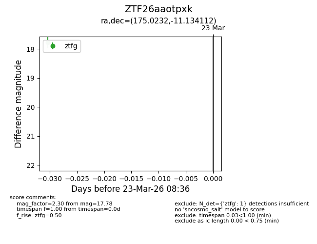
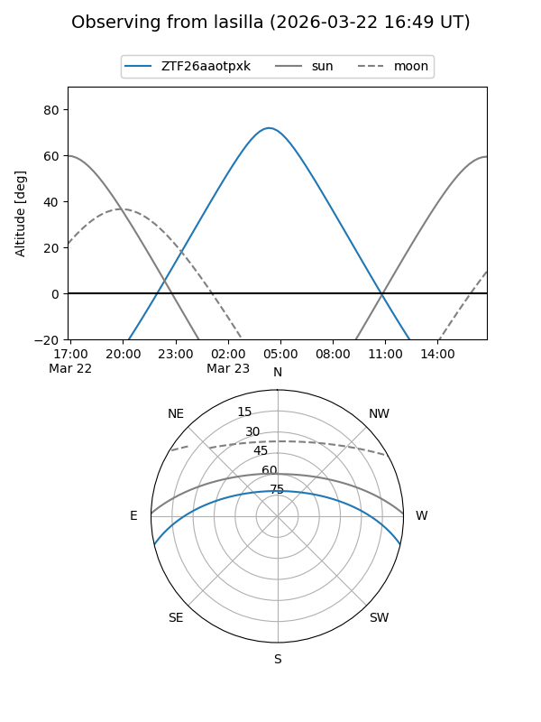
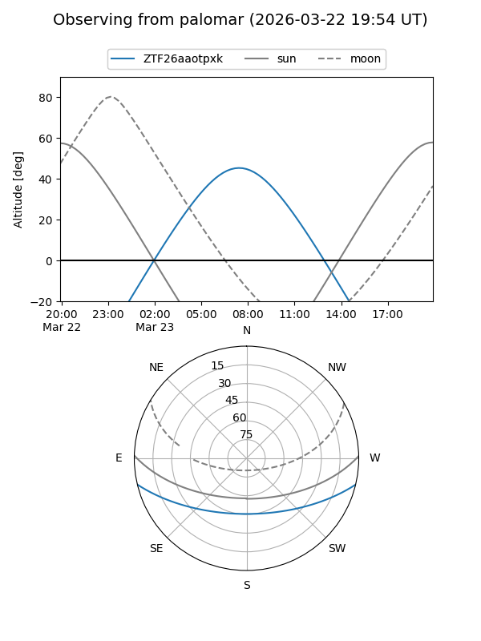

ZTF26aaotpxk
Target ZTF26aaotpxk at 2026-03-23 08:38
Aliases and brokers:
FINK: link
Lasair: link
ALeRCE: link
alt names
ZTF26aaotpxk (ztf,fink_ztf)
Coordinates:
equatorial (ra, dec) = 175.0232,-11.13411
equatorial (HMS+DMS) = 11:40:05.56,-11:08:02.80
galactic (l, b) = (276.2402,+48.00572)
Flags:
Photometry:
last ztfg=17.78
1 ztfg detections
Lightcurve

Visibility


Additional plots